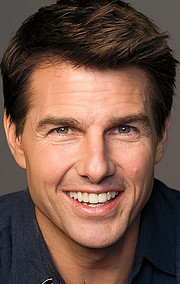
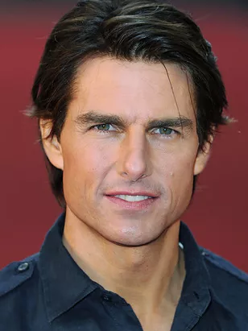

В недалёком будущем раса инопланетян вторгается на Землю. Никакая армия в мире не может противостоять им. Майор Уильям Кейдж умирает в бою, но случается невозможное — он оказывается во временной петле. Раз за разом он попадает в один и тот же бой, сражается и умирает снова и снова. И каждое повторяющееся сражение приближает его к разгадке того, как победить врага.
Смотреть на КинопоискГрейс прячет своих детей в уединенном особняке на острове, дожидаясь окончания войны. Её дочь и сын страдают странным заболеванием, они не выносят прямого дневного света. Когда в доме появляются трое новых слуг, им приходится соблюдать правила: все комнаты всегда должны быть в полумраке, и нельзя открывать дверь, пока не заперта предыдущая. Но мерному течению жизни дома вскоре приходит конец - некая потусторонняя сущность пытается нарушить заведённый порядок.
Смотреть на КинопоискЗемля, пережившая войну с инопланетными захватчиками, опустела; остатки человечества готовятся покинуть непригодную для жизни планету. Главный герой — техник по обслуживанию дронов — находит разбившийся корабль NASA, команда которого погибает у него на глазах. Ему удаётся спасти лишь одну женщину — и вскоре он понимает, что это перевернёт его жизнь.
Смотреть на КинопоискПолное имя: Томас Круз Мапотер IV
Дата рождения: 3 июля 1962 года
Место рождения: Сиракьюс, штат Нью-Йорк, США
Интересные факты: